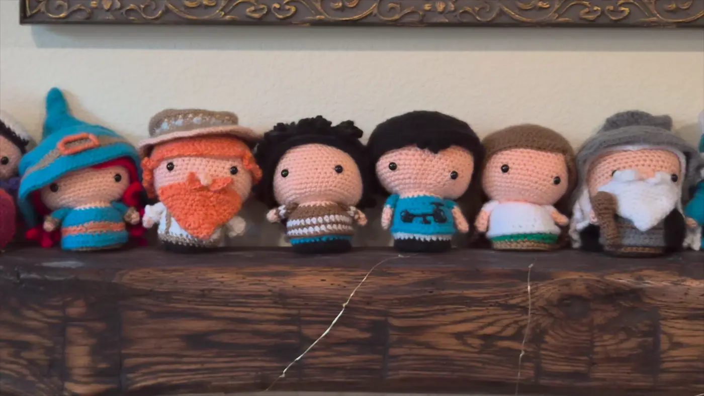

Science communication
Chabot Space & Science Center
Three years, from volunteer to paid intern to Galaxy Explorer Mentor. I guide hands-on experiments, including paper rockets, and contributed CAD work to a team-built RC rover.
Design · Engineering · Storytelling
I’m Siya. I work across code, circuits, stories, and yarn—exploring how an idea becomes something people can use, understand, or enjoy.
Explore my work
Wearable obstacle awareness through touch.

Building form one stitch at a time.
Pill adherence sleeve
A visible record, built into a daily routine.
DropLedger
From a receipt to a property expense record.
Written & illustrated by Siya Chhibber
From a story to a museum shelf.
Two children’s books, from page to purchase.
NASA Ames Research Center
Research in drone safety & urban air mobility
Drone safety and the ground behind air mobility.
Journalism · April–July 2026
Research. Interview. Question. Rewrite.
Reporting the opioid crisis for young readers.
A little about me
I’m a student at Emerald High School in Dublin, California. I’m interested in the space where engineering, design, and storytelling meet: a wearable that communicates through touch, a science idea that becomes a children’s book, or a pattern that becomes something you can hold.
My work moves between research and making. At NASA Ames, I worked on drone safety and transportation simulation. At Chabot Space & Science Center, I help children explore science through hands-on activities. Both keep me asking how to make something complicated understandable.
Away from a prototype or a draft, I crochet, play piano and guitar, and practice archery.
Science communication
Three years, from volunteer to paid intern to Galaxy Explorer Mentor. I guide hands-on experiments, including paper rockets, and contributed CAD work to a team-built RC rover.
Community & leadership
I founded the club at Emerald, helped create its charter and election process, and grew the group from 10 to 25 members. I’m working toward a leadership handoff that lets the club keep going.
Beyond the desk
Crochet patterns, visual art, piano, guitar, and archery give me different ways to practice attention, structure, and patience.